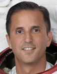

Lyndon B. Johnson Space Center
Houston, Texas 77058
|
National Aeronautics and Space Administration Lyndon B. Johnson Space Center Houston, Texas 77058 |
 |
Biographical Data |
||
JOSEPH M. ACABA
NASA Astronaut
PERSONAL DATA: Born in 1967 in Inglewood, California, and raised in Anaheim, California, where his parents, Ralph and Elsie, still reside. Enjoys outdoor activities, such as camping, hiking, biking, kayaking and scuba diving.
EDUCATION: Esperanza High School, Anaheim, California, 1985; Bachelor of Science in Geology, University of California - Santa Barbara, 1990; Master of Science in Geology, University of Arizona, 1992
ORGANIZATIONS: International Technology Education Association, Florida Association of Science Teachers, Association of Space Explorers
EXPERIENCE: United States Marine Corps, Reserves. Worked as a hydro-geologist in Los Angeles, California, primarily on Superfund sites, and was involved in the assessment and remediation of groundwater contaminants. Spent two years in the United States Peace Corps as an Environmental Education Awareness Promoter in the Dominican Republic. Manager of the Caribbean Marine Research Center at Lee Stocking Island in the Exumas, Bahamas. Taught one year of high school science at Melbourne High School, Florida, and four years of middle school math and science at Dunnellon Middle School, Florida.
NASA EXPERIENCE: Selected as a mission specialist by NASA in May 2004. In February 2006, he completed astronaut candidate training that included scientific and technical briefings, intensive instruction in shuttle and International Space Station systems, physiological training, T-38 flight training and water and wilderness survival training. Upon completion of his training, Acaba was assigned to the Hardware Integration Team in the Space Station Branch, working technical issues with European Space Agency (ESA) hardware. He was also a member of the Space Shuttle Branch, supporting shuttle launch and landing preparations at the Kennedy Space Center, Florida.
SPACEFLIGHT EXPERIENCE: STS-119 Discovery (March 15 to March 28, 2009) was the 125th shuttle flight, the 36th flight of Discovery and the 28th shuttle flight to the International Space Station. The primary objective of this flight was to deliver the final pair of power-generating solar array wings and truss element to the International Space Station. Acaba accumulated 12 hours and 57 minutes of extravehicular activity (EVA) in two spacewalks. STS-119 returned to land at the Kennedy Space Center, having traveled 202 orbits and 5.3 million statute miles in 12 days, 19 hours and 29 minutes.
Expedition 31/32 launched at 9:01 a.m. Baikonur time on May 15, 2012, from the Baikonur Cosmodrome in Kazakhstan. Gennady Padalka and Sergei Revin of the Russian Federal Space Agency and Acaba landed their Soyuz TMA-04M spacecraft in Kazakhstan at 8:52 a.m. Kazakhstan time on September 17, 2012. Acaba spent 123 days aboard the station as a Flight Engineer of the Expedition 31 and 32 crews. Acaba supported the arrival of the first commercial resupply spacecraft, SpaceX's Dragon, in late May; an undocking, re-docking and final undocking demonstration of the Russian International Space Station Progress 47 cargo ship; the first single-day launch-to-docking demonstration of Progress 48 and the arrival and departure of the third Japanese cargo ship, HTV3. Acaba served as intra-vehicular crew member for two U.S.-based spacewalks, helping to restore a critical power unit and exchange a faulty camera on the station’s robotic arm. Acaba also participated in numerous scientific research experiments and performed regular maintenance and operational tasks aboard the orbiting complex.
Acaba has logged a total of 138 days in space during two missions.
SEPTEMBER 2012